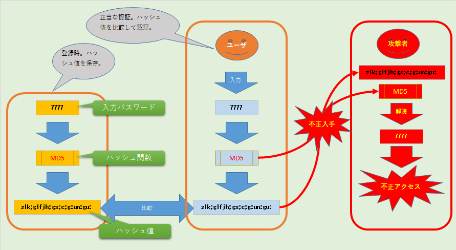

のうはう

- 前提として、CentOS6.5 の構築後の作業
- 参考はこちら
- http://futurismo.biz/archives/1348
| タイトル |
内容 |
| 項目名 |
内容がはいります。 |
| 項目名 |
内容がはいります。 |
| 項目名 |
内容がはいります。 |
小見出し
いきなり、複雑な事を考えても理解が追い付かないので、とりあえず、大きく考えてみましょう。ソフトウェア開発の役割として、時代が進むにつれて、ソフトウェアそのものの複雑さと比例して、開発の役割も複雑化しています。
開発とは違うのですが、野球のピッチャーなどは、昔は完投が当然でルール上は交代はできても先発ピッチャーが基本的に１試合投げ切るのが当然でした。そして、いつの間にかリリーフ専門のピッチャーが登場し、さらに中継ぎ専門のピッチャーが出てきます。このように１つのポジションでも、試合を有利に進める為に役割の細分化が行われるのが世の常です。ただ、あまり無意味に複雑化しすぎるとそれはそれで弊害もありますが。
まず、大昔（といっても50年～40年ほど前でしょうか）、ソフトウェア開発は、現在ほどのソースコード量も、複雑なフレームワークもなく、まるで計算式を書くかのように上から下へとコーディングしたものが、機械語にコンパイルされて動いていました。この頃にアーキテクトという言葉が浸透していたかどうかはわかりませんが、少なくともソフトウェアを製造するにあたってスキップできない部分なので、誰かが担っていたのでしょう。
作成するものの規模が小さいという事は、工数もそほど大したものでもないのでしょう。そんな時代のアーキテクチャ規模を考えれば、専任者を用意する必要もなく、プログラマがその場で考え、脳内で思いついた事をそのまま指先に伝えてコーディングされ実行コードが作られていったのでしょう。つまり、設計開発が分離されておらず、１人の開発者の中で定義・開発・コーディング、さらにテストの一連の流れが完結していたものと思われます。
時代が下って、ソフトウェアの規模や種類の多様性が広がるにつれて、その開発作業は１人の開発者の脳内では収まりきらなくなってきた。そうなると必然的に開発チームが発生し、開発作業に従事する人数も増えてきます。
ここで１つ問題が起こります。１つのプログラムを複数人数が作成する際に、全体の統一性を維持するのが難しくなってきました。「統一性」とは、砕いていえば、「コードがきれいに整頓されて記載されているか？」や「重複したコードが正確に構造化されているか？」や「変数名などが一定の規則に従って命名されているか？」などのコードの読み易さに関する事から、「ＡさんとＢさんが作ったプログラムを結合して、ちゃんと動くのか？」のような品質に関する事まで１人で作った場合にはあまり考慮されてない問題が生まれてきました。
じゃあ、これらを解決する為にはどうしたらいいのでしょうか？
開発の歴史は、人類の歴史そのものと同じ流れ
少しここで大袈裟な話をしてみましょう。前項で、開発規模が大きくなった事による色んな問題が発生した事を書きました。この流れって開発の歴史だけではなく、人類が歩んできた文明の歴史に重ね合わせて考える事も出来るんです。どういうことか？
学校で習ったかもしれませんが、世界四大文明というものがあります。（※最近では、少し僕の習った昭和の教科書とは異なるようなのですが、とりあえずここでは、僕の知識で話を進めます。）僕の習った教科書には、メソポタミア文明・エジプト文明・インダス文明・黄河文明が載っていたように記憶しています。これらの文明で共通している事があります。それは、集団の規模が大きくなっていくという事です。
最初に人類が狩りなどをしていた時代には、おそらく家族単位程度で集団行動をしていたのでしょう。それから、複数の家族が集まって狩りをした方が、より効率よく獲物を獲得できる事に気づきます。さらに、農耕が始まると大規模集団で農業をする事で食料不足問題が軽減され、極端な話、餓死する可能性が限りなく低くなっていきました。そして、農耕を行う為に必要な土地を奪い合う為に、集団間に争いが発生します。という事は、より強い集団が、他の集団を征服し、より広い土地を獲得し、多くの食料を獲得し「生きる」という事での心配事がなくなっていきました。
しかし、集団が増えれば増えるほど１つの問題に行き当たります。ただ、一緒に暮らす人数を増やしたところで皆が皆、好き勝手な行動をしただけでは、ただ住所が同じなだけで、個々で行動した時代と生産性は何も上がっていません。多くの人数を獲得した集団は、そのリソースを効率よく生産性に結びつける事をしなければ、大人数になった意味がないのです。
そこで、それぞれに役割を決めていきます。狩りをする者、服を作る者、農耕をする者、道具を作る者などそれぞれが専門化され、役割が発生しました。
何かこれらの動きって、開発規模の増大の話と同じですね。つまり、より良く多様性や規模を実現する為には、より多くの開発者が開発に参加し、それらに効率よく仕事を割り当てて開発作業を進める事で、より大規模なソフトウェアを短期間で開発する事が可能になります。
役割分担の為に必要になるものとは
では、人数が増えればどんな役割が必要になるのでしょうか？前項で書いた「○○する者」というのは、もちろんソフトウェア開発でも必要になります。少し話題を振り返ると、１人で開発されていた時代に、その１人の開発者の脳内で行われていた作業を複数人数に割り当てて専任化すればいいわけです。
まずは、設計。たまに、「自分はいきなりコーディングしているので設計なんて必要ない」という人がいます。俗に「いきなりコーディング」というやつです。一見それは、設計という過程を飛ばしているように見えますが、そうではありません。手がコードを書く前に、必ず脳内で設計が行われています。「いや、俺は本能のままに指を動かしている」という人がいるかもしれませんが、私の理解の範囲を超えているので、ここではあえて無視します。
では、なぜ設計が行われていない様に見えるのでしょうか？それは、アウトプットが物理的に存在しないからです。設計の結果がソースコードと言えなくもないですが、それは、コーディングしている本人以外の人が確認できる形のあるものがソースコードなので、そう見えるだけなのです。設計という課程は見えなくても必ず行われています。
そして、その役割を開発者の脳内から出して、他の人に割り当てる際に必要なものは何でしょう。それは、設計図です。正確に言えば、「設計の結果を設計者本人以外が確認できるアプトプット」です。
つまり、設計者とプログラムを書く人が物理的に異なる場合、設計者が設計した結果をプログラムを書く人に伝える必要があります。設計のアウトプットは、そのまま、プログラムを書く人のインプットになるのです。
今では、ソースコードに開発言語があるように、設計書にも統一的な記載を促す為に、UMLなど設計書用の言語が存在します。１人の人間の脳内で行われた設計の結果をできる限り正確にプログラムを書く人に伝える為に、両人が知っている言語で伝えるという事は当たり前の流れですね。
開発以外の実際の歴史に当てはめると、これは「言語」に当てはまります。つまり、自分以外の人に自分の脳内で描いたものを伝える為には、目に見える、もしくは、耳で聞こえるそして、その内容が正確に伝わる必要があるのです。その為に、集団での作業で、「言語」や「文字」が必要なのです。
これらのアプトプットにより、集団作業が可能になり、１人で何かをする為の時間を短縮したり、１人では不可能な作業が可能になったりするのです。普段から当たり前に使っている言葉や文字は、人類が他の生物を凌駕する為には、必然的に生まれてきた武器なのです。
【ちょっと寄り道】バベルの塔の話
「言語」が出てきたついでに、ちょっと本題からズレますが、皆さん「バベルの塔」という聖書に出てくるお話しを知っているでしょうか。これこそ、僕がずらずらと書いている事を分かりやすい物語にして現代に伝えています。
簡単にいうと、人間が一致団結して高い塔を建てていて、それが気に食わない神様は何とか塔の建設を中止させようと、作業している人間の言語をバラバラにしてしまい、建設作業を中断させたって話ですが、同じ形式で理解されるアウトプットがないと集団作業なんてとてもできないという事です。
バベルの塔の建設前は、人間の言葉は１つしかなかったが、このエピソードがあるから、世界に様々な言語があるという事になっているようです。昔の人の構成力もなかなか凄いと思います。
人数が増えれば必要になる役割とは
さて、ここまでで、「集団作業では、役割分単が必要」と「各役割をつなげて１つの結果を得るには的確なアウトプットが必要」という点が分かりました。
しかし歴史は進み、作業規模は大きくなるばかりです。ある程度の規模なら、結果を出すための流れの中で必要な役割を各自が理解していれば良かったのですが、ここでまた問題が発生します。
それは、各自が自分の役割を理解しても結果につながっている事を確認する人がいない事です。
ある程度の単純作業なら一度流れを決めてしまえば、各自が自分の仕事をこなす事で一定の結果が得られるので、何の問題もないでしょう。ところが、最初に役割を決めた時とは状況が変化した場合にそれに対応する為に役割を変えたりする必要が出てきます。つまり、予定では、５人で１日あれば終わる作業でしたが、やってみたら１０人いなければ終わりそうにない事を途中で気づいたとしましょう。この時、作業をしている５人は当初の自分の役割はこなしているので、１日過ぎて作業が終わっていない事に始めて気づく事になります。
仕方ないのでもう１日作業すればいいのでしょうが、ここで、人間は気づきます。「５人の他にもう１人、５人の作業を監視して終わりそうにない事に気づいた時点で、人数を増やすなり、予定を変更したりする役割が必要なんじゃないか？」と。
ここでは、簡単に１日程度の作業を例にしましたが、これが１年から２年に及ぶ巨大プロジェクトだったらどうでしょうか。１年たって実は終わってなかったので、もう１年やるという事になります。しかし、全体を見渡すという役割を置けば、１年よりもっと早く、予定と実体のズレを気づいて増員などで１年以内に作業を効率よく終わらせる事ができるでしょう。
この「全体を見渡す役割」が村では村長となり、街では町長となり、はては、国では王様となっていくのです。そして、少しでも効率よく集団をコントロールできた王が、効率悪い集団を組み込んで大きな国を作り歴史を動かしてく。つまり、競争で勝者となれるのです。
そんな事してまで勝者になって……という話は、それはそれで話したいのですが、長くなるのでまた別途話しましょう。
「まとめる役割」が開発作業でいう管理者である
「まとめる役割」が作業効率を上げて、集団行動を促進させる事はなんとなく分かりました。開発作業も例外ではありません。例え、100人のプログラマが集まっても１つの目的に向かって管理する人がいなければ、100人で作業する意味はありません。
開発作業の場合、「まとめる役割」といってもまとめる観点などによっていくつかの言い方があります。
大きく分けると、マネージャは、そのプロジェクト全体の予算やスケジュールなどを管理（調整）する役です。そして、リーダーは、チームメンバーの役割毎に問題なく作業が進んでいるか？、予定外のアクシデントがないかなどを監視して何かあれば調整する役割を担っています。
開発作業が大規模になるにつれて、管理対象も多様化し、まとめる役割の中でもさらにまとめる対象が細分化してきています。それは、規模に対して１人では担いきれない責任が発生した事になるのです。
小見出し
本文本文本文本文本文本文本文
本文本文本文本文本文本文本文
小見出し
本文本文本文本文本文本文本文
本文本文本文本文本文本文本文
まとめ
結論
まとめ
CTA
広告とか。。。